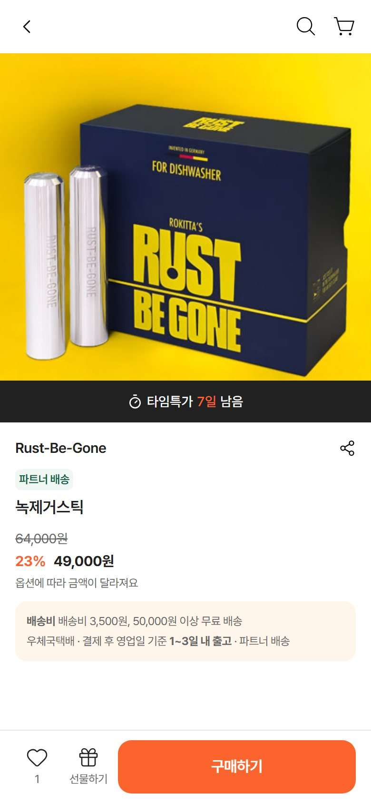
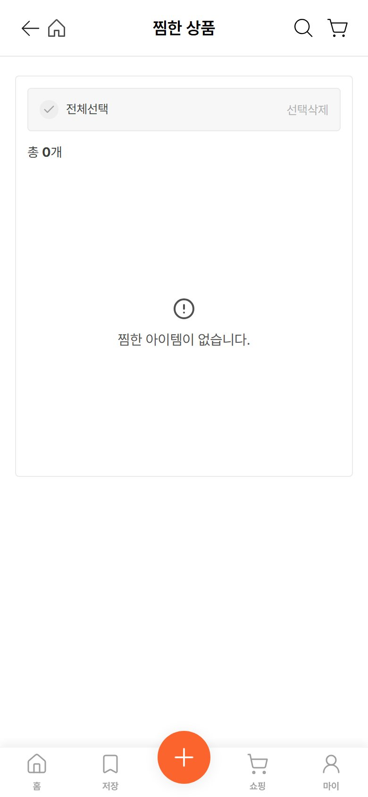

같은 「상품 저장」인데 쇼핑 카드는 책갈피, 상품 상세는 하트라 헷갈립니다. 둘은 실제로 같은 데이터입니다(같은 서버 주소로 저장되고, 저장 > 상품과 마이 > 찜한 상품에 같이 나옴). 이름도 저장·찜·관심 상품 셋입니다. 아이콘은 책갈피, 이름은 「저장」 하나로 맞춥니다.
| 항목 | 지금 (개발 앱에서 잰 값) | 제안 |
|---|---|---|
| 상품 상세 왼쪽 아래 아이콘 | 하트 (lucide heart 24px, 선 1.3px) | 책갈피 (lucide bookmark 26px, 그려지는 선 1.3px = stroke-width 1.2) — 쇼핑 카드·하단 메뉴 「저장」과 같은 모양 |
| 그려지는 크기(실측) | 하트 21.3×18.3px · 옆 선물하기 19.3×19.3px | 책갈피 26px → 16.7×21.0px (24px로 두면 15.3×19.3px, 선물하기 폭의 79%라 작아 보임) |
| 켠 상태 색 | 잉크 #212121 채움 | 오렌지 #FC642D 채움 (가이드 4.0절 4번: 저장·찜 켠 상태 = 오렌지) |
| 꺼진 상태 | 잉크 #212121 선 | 그대로 |
| 아래 숫자 | 저장한 사람 수 (12px) | 그대로 |
| 누르면 | 바로 바뀜 · 알림 없음 | 바로 바뀜 + 17번과 같은 알림(「저장했어요 · 보기」) |
| 단추 이름(화면 읽기) | 관심 상품 등록 / 관심 상품 해제 | 저장 / 저장 해제 |
| 마이페이지 칸 | 찜한 상품 → 찜한 상품 화면(같은 목록) | 저장한 상품 → 저장 > 상품 탭으로 이동 (같은 목록을 두 곳에 두지 않음) |
| 부르는 이름 | 저장(카드·저장 탭) · 찜(마이) · 관심 상품(상세) | 저장 하나 |

상품 상세 지금(실제 화면). 왼쪽 아래 하트와 숫자, 옆에 선물하기

마이페이지 > 찜한 상품 화면 지금. 저장 > 상품과 같은 목록입니다.
「상품 상세」는 실제 화면에서 하트만 지우고 그 자리에 단추를 다시 그린 모형입니다. 「마이페이지」는 실제 화면의 글자만 바꿔 찍었습니다.